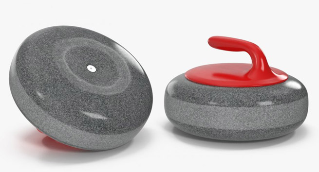

Bij een stilstaand object is de normale kracht hetzelfde als de zwaartekracht. Hierdoor blijft het object in stilstand tot er een externe kracht op wordt uitgevoerd.
Dit stelling werd als eerst beschreven door Newton en hij noemde dit:
De eerste wet van Newton: de traagheidswet.
Wanneer er een externe kracht op een object wordt gebracht zal het object in de richting van de kracht bewegen.
Het object zal niet in de richting van de rotatie krullen, maar zal in de tegengestelde richting krullen.
Doordat het object vertraagt zal er door een asysmetrische wrijving een krulling onstaan. Doordat de bovenkant van het glas meer wrijving onderneemt omdat het object op deze punt probeert om te kantelen zal door de verschil in wrijvingskracht in de tegengestelde richting krullen.
De onderstaande animatie toont de beweging van een Curling stone:
In tegenstelling tot een normale object beweegt een curling stone in dezelfde richting als de rotatie.
De reden hiervoor is de vorm van een curling stone. Zoals u kunt zien in de onderstaande foto is de onderkant van een curling stone niet helemaal glad. Er een is ringvormig indeuking aanwezig die wellicht hier de reden van is.

De ringvormig indeuking zorgt voor een fenomeen bekend als “smelten via een asysmetrische wijving" .
Zoals bij de vorige gedeelte van de glas is het mechanische van de beweging vrijwel hetzelfde. Het verschil ligt dat door de wrijving van de curling stone er een extra laag water vormt onder de curling stone. Dit zorgt ervoor dat de curling stone in tegenstelling tot de glas versnelt in de richting van rotatie. Hierdoor krult de curling stone in de beweging van de rotatie.
Curling blijft nog altijd vele wetenschappers in verwarring brengen, maar dit is een bijna zekere reden voor de gedrag van een curling stone.
Auteur: Farshad Nour